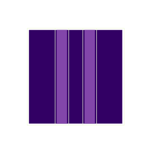

Schnelles Bildfügen
Das Zusammenfügen von sich überlappenden Digitalbildern ist bekannt aus der Panoramabildfunktion in Smartphones.
In diesem Projekt wurde zusammen mit einem Kunden der Maschinenindustrie ein Bildfüge-Algorithmus für Grauwert-Einzelbilder von Videos entwickelt. Aus den gefügten Videobildern können die Bewegungen der Videokamera auf wenige Mikrometer gemessen werden.
Als besonderes Qualitätsmerkmal verwendet der Algorithmus eingeschränkte Verschiebungsbereiche aufeinanderfolgender Bilder. Damit ist das Verfahren schnell und gleichzeitig robust bei Schwankungen des Bildkontrasts.